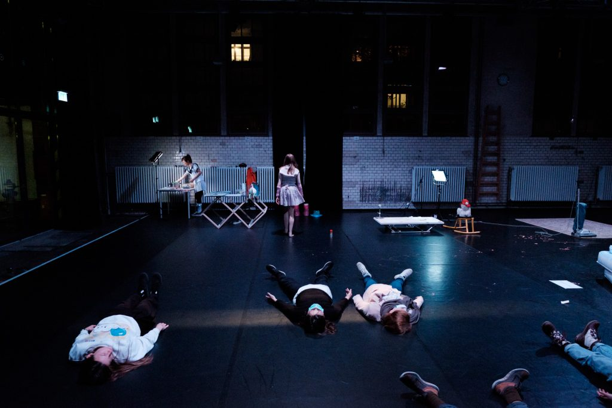
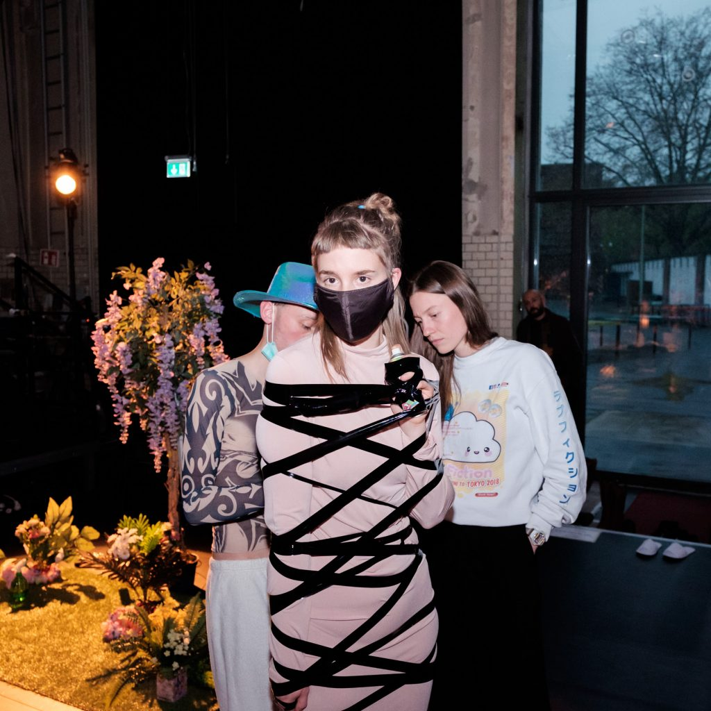
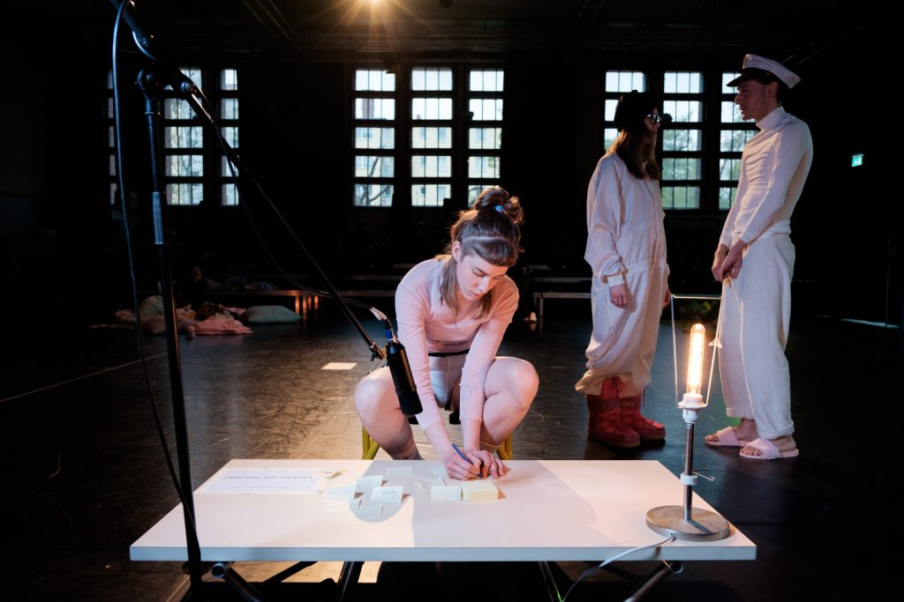

Manifest: A work on progress
Installative dance performance. 2017. Performed at Ufer Studios, Berlin as part of the Suddenly Festival.
Composition, sound design, music direction and performance.
Retrospectiva: ecología de la ocupación es una instalación y un performance participativo de larga duración. A través del formato de un taller, la convención performática que separa al artista de la audiencia se difumina para crear un espacio que se manifiesta a través de su ocupación. En este sentido, la ocupación es entendida tanto como una coexistencia de cuerpos y objetos en el espacio y en el tiempo así como la macroestructura de acciones e interacciones que componen esa coexistencia, o — dicho de otro modo — en cómo sus integrantes se mantienen ocupados a lo largo de un performance. Es en este marco en el que la obra es compuesta y en él surge un evento efímero y colectivo que se asemeja a la combinación de la central de una startup, a un centro de rehabilitación e incluso a una secta.
As performed at Ufer Studios, Berlin as part of the Suddenly Festival, 2017. Photo by P. Weinrich.
A lo largo del proceso de creación, los participantes generan una base de datos de conocimiento y habilidades, así como un archivo común de acciones colectivas. Este material se puede dividir en un calentamiento o ejercicio corporal transmisible, en el desarrollo de un repertorio colectivo de materiales en torno a la labor y al tiempo libre (movimientos, textos, música, instrucciones, etc.) y, en un contexto más amplio, en encontrar un dispositivo común que responda a la pregunta ¿qué nuevos formatos de “estar juntos”, de comunidad o de colectividad se pueden generar a través de la labor de una performance? Este proceso es la traducción artística de la ecología de la ocupación.
As performed at Ufer Studios, Berlin as part of the Suddenly Festival, 2017. Photo by P. Weinrich.
La presentación final del evento es una invitación a ser testigo de la manifestación de esa ecología. A lo largo de la presentación, el espacio es construido por los cuerpos presentes en él, y está en una transformación constante pero sutil. El aparente silencio se distorsiona debido a una textura musical constante y por la amplificación de los sonidos en vivo, de una manera casi imposible de reconocer. Las luces cambian lentamente pero crean una macroestructura narrativa a lo largo de todo el evento. De esta manera el espacio se convierte en un cuadro viviente y el público tiene la libertad de decidir el nivel de implicación en este proceso, por ejemplo al aceptar alguna tarea propuesta por un participante, al interactuar con alguno de los dispositivos construidos, o simplemente al presenciar cómodamente cómo la acción se desarrolla frente a sus ojos. En momentos específicos hay materiales coreográficos recurrentes (cada hora, por ejemplo), impartidos por los participantes y a los que el público puede unirse. En otros momentos una acción común puede surgir, como comer juntos, meditar o abrazarse. Estas acciones, así como los dispositivos espaciales y su transformación marcan el paso del tiempo en la instalación y constituyen la labor común de un ecosistema artístico.
As performed at Ufer Studios, Berlin as part of the Suddenly Festival, 2017. Photo by P. Weinrich.